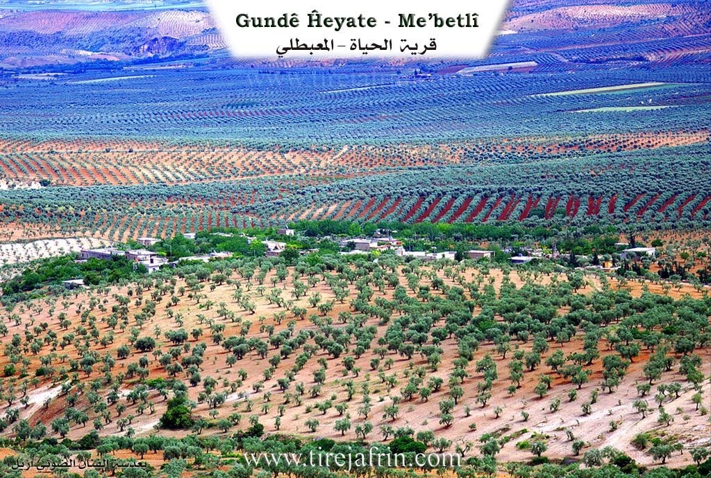
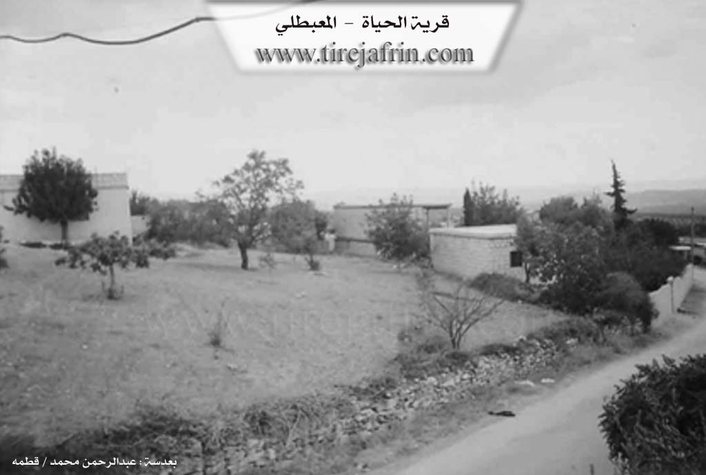

General Information
Nahiya (Subdistrict)
Mabeta
Also Known As
Gu.Ĝeyatê, Gundê Heyatê, Hayat, Hayûtiyê, Heyatê, Ĝeyatê, الحياة, حياة, كونده حياته
Tribes
Sêwî
Families, Clans, etc.
Bêremê Huso, Cimo, Emîko, Emîkê, Hemkûse, Huseynê Ma'mê, Menanê Henên, Xeleçete, Xelîl Cinê, Şewqî, Şêxê Bêrem
Photos


Basic Information about Ĥeyatê
Source: Ax û Welat
Etymology: Founders also chose the name Heyatê to signify a new beginning separate from their origin village of Sêwiya
Old Names: Şiyana
Foundation Date/Period: 1961
Number of Caves: 7
Springs: Kola Meyî Bêrem, Kaniya Basûtê
Hills: Girê Kitxê, Çiyayê Hawarê
Ruins: Xerabî Şêxkelê
Other Landmarks: Deşta Kitxê
Source: Khalil Sino
Etymology: Visitors from Sêwiyan saw the fertile land and orchards and declared "Vira heyat e" (Here is life), leading to the name Heyat
Foundation Date/Period: Approximately 60-65 years ago
Number of Caves: 10
Summaries
I. Summary from TirejAfrin Site (English) of Ĥeyatê
Source: https://www.tirejafrin.com/site/kura%20afrin%20%20%20mebetli%20-%20heyate.htm
It is stated in the book جبل الكرد (عفرين) دراسة جغرافية Çiyayê Kurmênc (Efrîn): A Geographical Study by د. محمد عبدو علي Dr. Mihemed Ebdo Elî: Village of Heyat / 520 inhabitants 8km 640m /:
Heyat: A local female given name.
It is a small village located on the southern slope of Çiyayê Hawar. Some of its families left it and established a small residential gathering beside the Riya Efrîn-Reco (Efrîn Reco public road). It is a modern village whose construction dates back to the year 1963, and the origin of its inhabitants is from the village of Swiya located on the summit of the mountain at a distance of about 2km.
And it is stated in the book: عفرين .... نهرها وروابيها الخضراء Efrîn... Her River and Her Green Hills by the writer عبدالرحمن محمد Ebdulrehman Mihemed from the village of Qetme:
Heyat: A village in Çiyayê Kurmênc, following the Mabeta sub district, Efrîn region, Heleb governorate. It is a small, beautiful village located in the middle section of the mentioned mountain, on the southern slope of the limestone Çiyayê Hawar which is furrowed by gullies. Its lands have a slight slope, with forests and pastures spread over its clay soil. It overlooks agricultural lands from the south and east directions. It is 13km away from the town of Mabeta towards the northeast.
Its construction is modern, dating back to 1963 AD. It is bounded on the north by mountainous heights planted with olive trees and the village of Oksizlî; on the south by a fertile agricultural plain, the Riya Efrîn-Reco (Efrîn Reco road), and the village of Qitranlî; on the west by mountainous heights planted with olive trees and the village of Gulîbo; and on the east by a slope and agricultural plain planted with olive trees and the village of Şêx Kîlo.
The number of its houses reaches about 35 houses, and its age is about 42 years. It is a village of recent era. Its houses are of stone and cement, spread in all directions. An electricity network and a primary school are available in it. The village drinks from an artesian well next to the village of Gulîbo belonging to the state. Its inhabitants work in the cultivation of olives and legumes, both rain fed and irrigated from artesian wells, summer vegetables, and fruit bearing trees (walnut, pomegranate, apricot, and apple). An asphalt road connects it to the town of Mabeta, reaching the center of the village. This is in addition to raising sheep and goats. Among its most important families is the Emîko family, and from the neighboring villages, their origin is from the village of Oksizlî.
Village Mukhtar: Sebrî Menan Menan
Preparation and execution:
Director of Navenda Tirej Soft: Ebdulrehman Hacî Osman
20/12/2013
Sources:
- Book: جبل الكرد (عفرين) دراسة جغرافية Çiyayê Kurmênc (Efrîn): A Geographical Study by د. محمد عبدو علي Dr. Mihemed Ebdo Elî.
- Book: عفرين .... نهرها وروابيها الخضراء Efrîn... Her River and Her Green Hills by عبدالرحمن محمد Ebdulrehman Mihemed from the village of Qetme.
II. Summary of Ĥeyatê from Ax û Welat
Source: https://www.youtube.com/watch?v=BGvPri35Qgo
The village of Heyatê, originally known by its Kurdish name Şiyana, is a relatively modern settlement located in the Mabata district of the Efrîn canton. Situated on the fertile Deşta Kitxê (Kitxê Plain), approximately 15 kilometers north of Mabata, the village was officially founded in 1961. Its origins are deeply tied to the nearby village of Sêwiya. The founders were originally residents of Sêwiya who owned agricultural land in the plain below but struggled with the lack of water and harsh conditions in their mountain home. Seeking a better livelihood near their crops and water sources, three cousins, Huseynê Ma'mê, Şêxê Bêrem, and Bêremê Huso, along with families like Hemkûse, Menanê Henên, and Bêremê Xelîl Cinê, migrated down to the plain to establish the new village.
In the early years of the settlement, before permanent stone houses were constructed, the residents lived in approximately six or seven caves (şikeft) that they dug themselves for shelter against the elements. The transition from Sêwiya was marked by a desire for independence and stability; when the government required a registered name, the settlers chose Heyatê to formalize their new existence, though the indigenous name remains Şiyana. Water was initially sourced from springs like Kaniya Basûtê and a site known as Kola Meyî Bêrem, but as the population grew, the villagers dug roughly 15 wells to sustain their community.
The social structure of Heyatê is cohesive, characterized by close kinship ties, with residents describing themselves as cousins (pismam) without external strangers. Key families include Cimo, Xeleçete, Emîkê, and Şewqî. The village has a strong reputation for education and culture. It established a school early in its history (around 1958, even before full official recognition), and many residents hold university degrees. Culturally, the village is known for its preservation of traditional crafts, such as women weaving Urzelk (ornamental wheat stalks) using plants gathered from Xerabî Şêxkelê, and the specialized trade of wooden ladder making (sêlim) from qapoq trees, a craft maintained by artisans like Neşetê Ehmedê Kîbar.
Heyatê also holds a significant place in the region's history of resistance and arts. It is the home of Şehîd Şakir, a renowned artist and musician who was the first from the village to join the guerrilla forces. He played a pivotal role in establishing local musical groups like Koma Mabata. The village has dedicated an academy and commune to his memory. In total, the community honors seven martyrs, including Şehîd Heyder, Şehîd Zîlan, and Şehîd Rustem. Economically, the village has evolved from purely agricultural roots (olives and vineyards) to hosting small-scale industry, including a battery and plastics factory that relocated from Heleb due to the war, providing local employment.
II. Summary of Ĥeyatê from Khalil Sino
Source: https://www.youtube.com/watch?v=I-TWPI5iMuU
The documentary focuses on Heyat, a village located on the Silav line within the Afrin region. Unlike many ancient settlements in the area, Heyat is a relatively modern foundation, established approximately 60 to 65 years before the time of filming. The residents identify primarily as Sêwî, originating from the nearby village of Sêwiyan. According to village elders, the land where Heyat now stands was originally used as agricultural plots, specifically vineyards and orchards, by the people of Sêwiyan. While their original village suffered from a lack of water, this area was lush and fertile. When the landowners began migrating here permanently, guests and visitors remarked, "Vira heyat e" (Here is life), which gave the settlement its name.
The village began with only two or three families but has since expanded to between 40 and 50 households. In the early years of settlement, the founders utilized the natural landscape for shelter. The village area contains approximately ten şikeft (caves), which the first residents cleaned out and used for living quarters and housing livestock before constructing proper masonry homes. One elder recalls that even as recently as his youth, they hauled water by animal back, a practice that has evolved but remains a challenge; residents often buy water by the tanker from the nearby village of Kitxê, located about two kilometers away, as local wells are frequently insufficient.
Socially, the village is described as a tight-knit community that functions like a single family. While the population is overwhelmingly Sêwî, a resident named Luqman notes that he is originally from Gundê Husê. The village relies heavily on surrounding towns for services and commerce. Residents travel to Batîfa, Mabeta, or Kitxê for medical care and markets. The narrative also features Ebû Zeîm, a traveling peddler from Maratê, who visits Heyat as part of a trade route that includes Kêlibû, Jûrsêwîyo, and Şêx Kêlê. Daily life involves tending to olive groves and gardens, with residents like Zûn growing spinach and radishes. The community maintains a modest school established in a private home and a mosque, emphasizing their self-reliance and strong internal bonds.
II. Ax û Walat Book 2
HEYATÊ
20/8/2017
[Image of the village of Heyatê]
Ax û Welat
Heyatê
The village of Heyatê is affiliated with the Mabeta district of the Efrîn canton, located 15 km north of the town of Mabeta and 20 km away from the city of Efrîn.
The name of the village in Kurdish is Jiyan, but it has been Arabized.
Bêremê Heso, Bêremê Xelîl, and Menanê Henên are among the first people who populated the village.
All the people of the village came from the village of Sêwiya because their fields were there, and they founded the village in 1961.
The population of Heyatê village is nearly 700 people and consists of 40 houses, from 3 main families:
41
The family of Hem Kosa, Xelê Çetê, and the family of Cima. The Umîkê family also came from the village of Sêwiya but settled south of the village on the Kitix plain.
To the east of the village are olive groves, the Kor valley, and the village of Xirabê Şêxkêlê; to the north, the Kitix plain with its water, springs, gardens, and orchards, the Efrîn-Reco road, the railway line, and the famous Kitix hill.
To the west are the road to Sêwiya village and the village of Kêlîbo, and to the north lies Hawarê mountain.
Before the establishment of the North-Rojava border, the road that went to Kilis was to the north of the village.
There are 7 martyrs from the village:
Martyr Şakir, Heyder, Zîlan, Rizgar, Kendal, Şervan, and martyr Ristem.
[Image of women holding portraits of martyrs]
Ax û Welat
Heyatê
42
The people of the village make their living from agriculture and, like the surrounding villages, primarily own olive trees along with vegetable and fruit orchards of grapes, walnuts, apricots, peaches, and plums.
Nearly 20 people work in the institutions and agencies of the Autonomous Administration in Mabeta and Efrîn.
There used to be an olive press in the village, but it is no longer in operation.
It is worth mentioning that the village of Heyatê is famous for its groundwater from springs and wells; almost every house has a water well.
Menanê Osmên was one of the elders of the village; he provided many services to the people of the village and in 1980 donated a house for the village school.
It is worth remembering that the literacy rate in the village is high; more than 25 people have obtained university degrees in various fields.
Transcriptions and Subtitles
| Source | Video | Subtitles | Transcript |
|---|---|---|---|
| Ax û Welat 1 | Watch Video | Download SRT | View Transcript |
| Khalil Sino 1 | Watch Video | Download SRT | View Transcript |
Foundation/Origin Information of Ĥeyatê
Its original inhabitants came from Sêwiya village. One of its most important families, the Amiko family, is originally from Uksuzli village.
Source: TirejAfrin Site
Founded during a period of land reform known as "islah." Its founding families, including those of Ûsê Me'mê and Menê Hemkûsê, relocated from the nearby arid village of Sêviyê to their own agricultural lands.
Source: Ax û Walat Transcript
Historically, the land was owned by the "Şêx" people. About 150 years ago, the ancestors of the current inhabitants, including the Nasir family, migrated from the village of Kaxirê and purchased the land from the Şêx, who then relocated to the village of Sêwiya.
Source: Afrin 366 Transcript
Possible Village Name Meaning of Ĥeyatê
Hayat is a local feminine proper name.
Source: TirejAfrin Site
The founders named their new home "Heyatê," the Kurdish word for "life," because it offered better living conditions.
Source: Ax û Walat Transcript